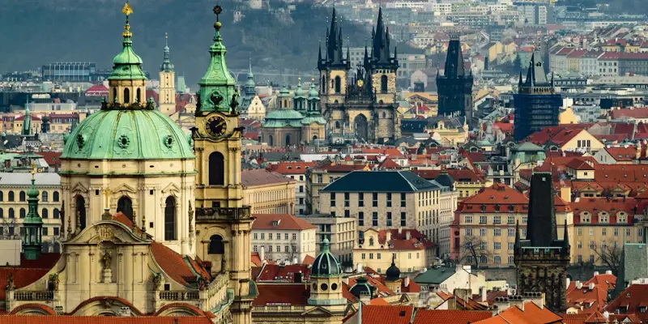

10 Best things to do in Old Town.
Old Town is amazing. There seems to me a near endless number of things to see and do. Streets to wander, restaurants, cafes, little shops, museums, book stores, art galleries, street cafes, churches are pretty much everywhere you look. Any time I leave my hotel in Old Town I have no trouble finding something to see and do.

As someone who enjoys history, I found Old Town to be paradise. It is a wonderful blend of the old and new. Everywhere you go everywhere you look is something that you just feel the need to explore and see.
The best Things to do in Old Town for your first visit. Itinerary Prague.
- Walk the main tourist areas
- Charles Bridge
- Klementinum Library
- Walk side streets
- Eat at local cafes
- Astronomical Clock
- Prague Castle
- Narodni Museum
- River boat cruise
- Drink beer. people watch